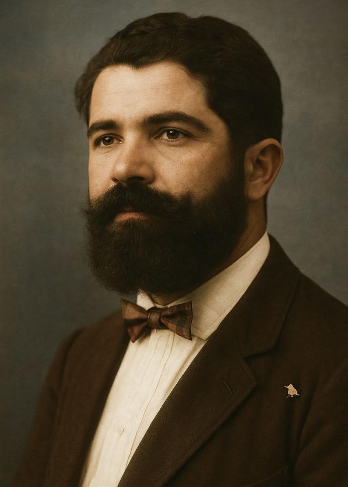
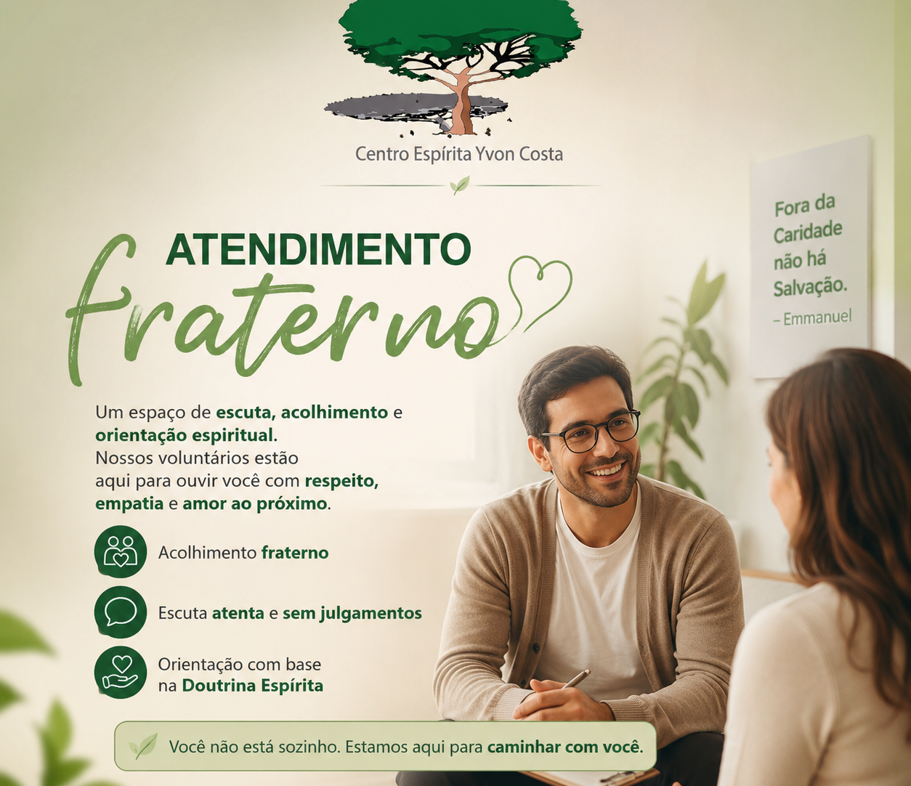

Paz, acolhimento e consolo para o seu coração.
"Fora da caridade não há salvação." — Allan Kardec
Dedicado ao estudo, à prática e à difusão da Doutrina Espírita em Belém do Pará. Uma casa fraterna de portas abertas para confortar, esclarecer e edificar.
Palestras & Eventos
Encontros doutrinários, seminários e estudos especiais abertos a toda a comunidade.
Uma casa de amor, oração e fé raciocinada
O Centro Espírita Yvon Costa é uma sociedade religiosa, beneficente e educativa dedicada ao estudo, à prática e à difusão da Doutrina Espírita codificada por Allan Kardec, tendo como modelo moral o Evangelho de Jesus.
Nossa missão é acolher a todos com fraternidade e respeito, promovendo o progresso moral através de palestras esclarecedoras, atendimento fraterno em ambiente reservado, passes curadores e aprofundamento filosófico em nossa biblioteca.
Estudo Sistematizado
Compreensão lógica da imortalidade da alma e das leis da vida.
Fraternidade Ativa
Prática sincera da caridade e solidariedade ao próximo.

Yvon Costa
Patrono Espiritual
"Exemplo de dignidade, desprendimento e devotamento ao ideal espírita-cristão na terra paraense."
Horários de Atividades
Todas as palestras e passes são abertos ao público em geral, sem custos.
Palestras Públicas & Evangelho
Reflexões doutrinárias e fortalecimento moral pela manhã
Duas sessões diárias com expositores espíritas
Reunião Doutrinária para toda a família
Você não está sozinho na sua caminhada.
O Atendimento Fraterno é um porto seguro para corações aflitos. Um diálogo individual, confidencial e amoroso, com trabalhadores preparados para ouvir suas angústias sob a luz consoladora da Doutrina Espírita.

Ação na Colônia do Prata
O Evangelho praticado: visitas fraternas, carinho e assistência aos nossos irmãos.
Amparo e Afeto ao Próximo
O Centro Espírita Yvon Costa realiza periodicamente caravanas fraternas à Colônia do Prata, levando não apenas mantimentos e donativos, mas principalmente a palavra de esperança, preces e o calor humano que transforma vidas.
Toda a arrecadação de roupas, alimentos e remédios é organizada pelos voluntários da Casa e entregue diretamente aos assistidos.
Você pode entregar donativos na sede ou fazer uma contribuição via PIX para a montagem de cestas básicas.
Contribuição Fraterna
O Centro Espírita Yvon Costa sobrevive exclusivamente da ajuda voluntária dos seus frequentadores. Sua doação mantém as portas abertas e apoia nossas ações sociais.
Visite a nossa Casa
Endereço:
Travessa Francisco Caldeira Castelo Branco, nº 870
Bairro São Brás / Fátima • Belém - PA
CEP: 66063-000
Ponto de referência: Entre Av. Gov. José Malcher e Av. Magalhães Barata. Próximo a paradas de ônibus e locais com estacionamento nas vias próximas.